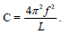

Đề môn Vật Lý số 2
BỘ GD VÀ ĐT THANH HÓA - TRƯỜNG THPT TRIỆU SƠN 2
90
:phút
00
:giây
Ghi Chú
Câu 1:
Trong mạch dao động LC lí tưởng đang có dao động điện từ tự do thì
A: năng lượng điện trường tập trung ở cuộn cảm.
B: năng lượng từ trường tập trung ở tụ điện.
C: năng lượng điện trường và năng lượng từ trường luôn không đổi.
D: năng lượng điện từ của mạch được bảo toàn.
Câu 2:
tại nơi có gia tốc trọng trường là g, một con lắc lò xo treo thẳng đứng đang dao động điều hòa. Biết tại vị trí cân bằng của vật, độ dãn của lò xo là
Δl
. Tần số dao động của con lắc này là
A:
B:
C:
D:
Câu 3:
Khi có sóng dừng trên dây, khoảng cách giữa hai nút liên tiếp bằng
A: một số nguyên lần bước sóng.
B: một bước sóng.
C: một nửa bước sóng.
D: một phần tư bước sóng.
Câu 4:
Một con lắc đơn có chiều dài 121 cm, dao động điều hòa tại nơi có gia tốc trọng trường g = 10 m/s
2
. Lấy π
2
=10 . Chu kì dao động của con lắc là
A: 0,5 s.
B: 1 s.
C: 2 s.
D: 2,2 s.
Câu 5:
Trong một mạch dao động LC lí tưởng gồm cuộn cảm có độ tự cảm L mắc nối tiếp với tụ điện có điện dung C đang có dao động điện từ tự do với tần số f. Hệ thức đúng là
A:
B:
C:
D: 
Câu 6:
Ánh sáng có tần số lớn nhất trong số các ánh sáng đơn sắc: đỏ, lam, chàm, tím là ánh sáng
A: lam.
B: chàm.
C: tím.
D: đỏ.
Câu 7:
Biểu thức li độ của vật dao động điều hòa có dạng x = Acos(ωt + φ), vận tốc của vật có giá trị cực đại là
A: v
max
=Aω
2
.
B: v
max
=Aω.
C: v
max
=2Aω.
D: v
max
=A
2
ω
Câu 8:
Điện áp giữa hai đầu một đoạn mạch có biểu thức u=220cos100πt (V). Giá trị hiệu dụng của điện áp này là
A: 220V.
B: 220√2V
C: 110V
D: 110√2V
Câu 9:
Một sóng âm truyền trong một môi trường. Biết cường độ âm tại một điểm gấp 100 lần cường độ âm chuẩn của âm đó thì mức cường độ âm tại điểm đó là
A: 50 dB.
B: 100 dB.
C: 10 dB.
D: 20 dB.
Câu 10:
Một chất điểm dao động điều hòa trên trục Ox theo phương trình x = 5cos4πt (x tính bằng cm, t tính bằng s). Tại thời điểm t = 5 s, vận tốc của chất điểm này có giá trị bằng
A: 5cm/s.
B: 0cm/s.
C: 20πcm/s.
D: 20πcm/s.
Câu 11:
Trong thí nghiệm Y-âng về giao thoa ánh sáng, khoảng cách giữa hai khe là 1mm, khoảng cách từ mặt phẳng chứa hai khe đến màn quan sát là 2 m, bước sóng của ánh sáng đơn sắc dùng trong thí nghiệm là 0,55 μm. Hệ vân trên màn có khoảng vân là
A: 1,3 mm.
B: 1,1 mm.
C: 1,2 mm.
D: 1,0 mm.
Câu 12:
Một máy phát điện xoay chiều ba pha mắc hình sao có điện áp giữa dây pha và dây trung hoà là 220 V. Điện áp giữa hai dây pha bằng
A: 220 V.
B: 127 V.
C: 220√2 V.
D: 380 V.
Câu 13:
Một sóng truyền trong một môi trường với vận tốc 110 m/s và có bước sóng 0,25 m. Tần số của sóng này là
A: 50Hz.
B: 440Hz.
C: 27,5Hz.
D: 220Hz.
Câu 14:
Nếu máy phát điện xoay chiều có p cặp cực, rôto quay với tốc độ n vòng/giây thì tần số dòng điện do máy phát ra là
A: f= 2np.
B: f=(np)/2
C: f=np
D: f=(np)/60
Câu 15:
Khi nói về đoạn mạch điện xoay chiều chỉ có cuộn cảm thuần, phát biểu nào sau đây đúng ?
A: Cường độ dòng điện hiệu dụng qua cuộn cảm tỉ lệ thuận với tần số của dòng điện qua nó.
B: Hệ số công suất của đoạn mạch bằng 1.
C: Điện áp giữa hai đầu cuộn cảm sớm pha π/2 so với cường độ dòng điện qua nó.
D: Cảm kháng của cuộn cảm tỉ lệ thuận với chu kì của dòng điện qua nó.
Câu 16:
Hai dao động điều hòa cùng phương, cùng tần số, có các phương trình dao động là x1 = 3cos(ωt – π/4) cm và x2 = 4cos(ωt + π/4) cm. Biên độ của dao động tổng hợp hai dao động trên là
A: 12 cm.
B: 5 cm.
C: 7 cm.
D: 1 cm.
Câu 17:
Nói về một chất điểm dao động điều hòa, phát biểu nào dưới đây đúng ?
A: Ở vị trí cân bằng, chất điểm có độ lớn vận tốc cực đại và gia tốc bằng không.
B: Ở vị trí cân bằng, chất điểm có vận tốc bằng không và gia tốc cực đại.
C: Ở vị trí biên, chất điểm có độ lớn vận tốc cực đại và gia tốc cực đại.
D: Ở vị trí biên, chất điểm có vận tốc bằng không và gia tốc bằng không.
Câu 18:
Khoảng cách giữa hai điểm trên phương truyền sóng gần nhau nhất và dao động cùng pha với nhau gọi là
A: vận tốc truyền sóng.
B: độ lệch pha.
C: bước sóng.
D: chu kỳ.
Câu 19:
Một vật nhỏ dao động điều hoà trên trục Ox với tần số góc ω. Ở li độ x, vật có gia tốc là
A: -ω
2
x
B: ω
2
x
C: ωx
2
D: -ωx
2
Câu 20:
Một máy biến áp lí tưởng có cuộn sơ cấp gồm 1000 vòng dây được mắc vào mạng điện xoay chiều có điện áp hiệu dụng U
1
= 200 V, khi đó điện áp hiệu dụng ở hai đầu cuộn thứ cấp để hở là U
2
= 10 V. Số vòng dây của cuộn thứ cấp là
A: 50 vòng.
B: 100 vòng.
C: 25 vòng.
D: 500 vòng.
Câu 21:
Mạch dao động điện từ LC lí tưởng gồm cuộn cảm có độ tự cảm 1 mH và tụ điện có điện dung 0,1 μF. Dao động điện từ riêng của mạch có tần số góc là
A: 10
5
rad/s.
B: 2.10
5
rad/s.
C: 3.10
5
rad/s.
D: 4.10
5
rad/s.
Câu 22:
Sóng điện từ và sóng cơ học
không
có chung tính chất nào dưới đây ?
A: Truyền được trong chân không.
B: Phản xạ.
C: Khúc xạ.
D: Mang năng lượng.
Câu 23:
Tia hồng ngoại là những bức xạ có
A: khả năng đâm xuyên mạnh, có thể xuyên qua lớp chì dày cỡ cm.
B: khả năng ion hoá mạnh không khí.
C: bản chất là sóng điện từ.
D: bước sóng nhỏ hơn bước sóng của ánh sáng đỏ.
Câu 24:
Đặt một điện áp xoay chiều u=100√2cos100πt (V) vào hai đầu đoạn mạch có R, L, C mắc nối tiếp. Biết R = 50 Ω, cuộn cảm thuần có độ tự cảm L = (1/π)H và tụ điện có điện dung Cường độ hiệu dụng của dòng điện trong đoạn mạch là
A: 2√2 A.
B: 2 A.
C: √2 A.
D: 1 A.
Câu 25:
Một dòng điện xoay chiều có tần số 50 Hz, khoảng thời gian giữa hai lần liên tiếp để cường độ dòng điện này bằng không là
A: 1/100 s.
B: 1/50 s.
C: 1/200 s.
D: 1/150 s.
Câu 26:
Tại hai điểm A và B trên mặt nước có hai nguồn sóng kết hợp cách nhau 10 cm dao động cùng pha và cùng tần số 40 Hz. Tốc độ truyền sóng trên mặt nước là 80 cm/s. Số điểm dao động với biên độ cực tiểu trên đoạn AB là
A: 10
B: 12
C: 11
D: 9
Câu 27:
Đặt vào hai đầu mạch điện R, L, C nối tiếp (cuộn dây thuần cảm) một điện áp xoay chiều có giá trị hiệu dụng không đổi thì điện áp hiệu dụng trên các phần tử R, L, C lần lượt bằng 60 V, 40 V và 120 V. Khi thay tụ C bằng tụ C’ để mạch có cộng hưởng điện thì điện áp hiệu dụng hai đầu điện trở bằng
A: 100√2
B: 70√2
C: 80
D: 100
Câu 28:
Phần ứng của một máy phát điện xoay chiều một pha có 200 vòng dây. Từ thông qua mỗi vòng dây có giá trị cực đại là 2 mWb và biến thiên điều hoà với tần số 50 Hz. Hai đầu máy phát nối với điện trở R = 1000 Ω. Bỏ qua điện trở của các vòng dây máy phát. Nhiệt lượng tỏa ra trên R trong thời gian 1 phút là
A: 474 J
B: 417 J
C: 470 J
D: 465 J
Câu 29:
Một con lắc lò xo có vật nặng khối lượng m = 1 kg dao động điều hoà trên phương ngang. Khi vật có vận tốc v = 10 cm/s thì thế năng bằng ba lần động năng. Năng lượng dao động của vật là
A: 0,03 J.
B: 0,02 J.
C: 0,04 J.
D: 0,00125 J.
Câu 30:
Trong thí nghiệm giao thoa Y-âng, khoảng cách hai khe là 0,5 mm. Giao thoa thực hiện với ánh sáng đơn sắc có bước sóng λ thì tại điểm M cách vân sáng trung tâm 1 mm là vị trí vân sáng bậc 2. Nếu dịch màn xa thêm một đoạn 50/3 cm theo phương vuông góc với mặt phẳng hai khe thì tại M là vị trí vân tối thứ 2. Bước sóng ánh sáng dùng trong thí nghiệm bằng
A: 0,4 µm.
B: 0,5 µm
C: 0,6 µm
D: 0,64 µm
Câu 31:
Mạch dao động LC gồm một cuộn dây có độ tự cảm 30 μH, một tụ điện có điện dung 3000 pF. Điện trở thuần của mạch dao động là 1 Ω. Để duy trì dao động điện từ trong mạch với điện lượng cực đại trên tụ là 18 nC phải cung cấp cho mạch một năng lượng điện có công suất là
A: 5,5 mW.
B: 1,80 W.
C: 0,18 W.
D: 1,80 mW.
Câu 32:
Một sóng dừng trên sợi dây đàn hồi dài với bước sóng 60 cm. Ba điểm theo đúng thứ tự E, M và N trên dây ( EM = 3MN = 30 cm) và M là điểm bụng. Khi vận tốc dao động tại N là √3 cm/s thì vận tốc dao động tại E là
A: -2√3 cm/s.
B: 1,5 cm/s.
C: -2 cm/s
D: √3 cm/s
Câu 33:
Con lắc đơn đang nằm yên ở vị trí cân bằng. Truyền cho con lắc vận tốc v
0
= 20 cm/s nằm ngang theo chiều dương thì nó dao động điều hoà với chu kì T = 2π/5 s. Cho g = 10 m/s
2
. Chọn gốc thời gian lúc truyền vận tốc. Phương trình dao động của con lắc dạng li độ góc là
A: α = 0,01cos(5t-π/2) (rad).
B: α = 0,1cos(5t-π/2) (rad).
C: α = 0,1cos(t/5-π/2) (rad).
D: α = 0,01cos(t/5+π/2) (rad).
Câu 34:
Một con lắc đơn có chiều dài l = 1 m, vật có khối lượng m = 100√3 g, tích điện q = 10
-5
(C). Treo con lắc đơn trong một điện trường đều có phương vuông góc với véc tơ g và có độ lớn E = 105 V/m. Kéo vật theo chiều của véc tơ điện trường sao cho góc tạo bởi dây treo và véc tơ g là 75
o
rồi thả nhẹ để vật chuyển động. Lấy g = 10 m/s
2
. Lực căng cực đại của dây treo là
A: 3,17 N.
B: 2,14 N.
C: 1,54 N.
D: 5,54 N.
Câu 35:
Một con lắc lò xo gồm lò xo có chiều dài tự nhiên l
0
= 30 cm. Kích thích cho con lắc dao động điều hòa theo phương nằm ngang thì chiều dài cực đại của lò xo là 38 cm. Khoảng cách ngắn nhất giữa hai thời điểm động năng bằng n lần thế năng và thế năng bằng n lần động năng là 4 cm. Giá trị lớn nhất của n
gần với giá trị nào nhất
sau đây ?
A: 3.
B: 5.
C: 8.
D: 12.
Câu 36:
Một đoạn mạch AB gồm hai đoạn mạch AM và MB mắc nối tiếp. Đoạn mạch AM gồm điện trở thuần R
1
mắc nối tiếp với tụ điện có điện dung C, đoạn mạch MB gồm điện trở thuần R
2
mắc nối tiếp với cuộn cảm thuần có độ tự cảm L. Đặt điện áp xoay chiều có tần số và giá trị hiệu dụng không đổi vào hai đầu đoạn mạch AB. Khi đó đoạn mạch AB tiêu thụ công suất bằng 160 W và có hệ số công suất bằng 1. Nếu nối tắt hai đầu tụ điện thì điện áp hai đầu đoạn mạch AM và MB có cùng giá trị hiệu dụng nhưng lệch pha nhau π/3, công suất tiêu thụ trên đoạn mạch AB trong trường hợp này bằng:
A: 60 W.
B: 120 W.
C: 160 W.
D: 180 W.
Câu 37:
Mạch dao động LC lí tưởng đang có dao động điện từ tự do, cường độ dòng điện tức thời trong mạch dao động biến thiên theo biểu thức i = 0,04cosωt (A). Biết cứ sau những khoảng thời gian ngắn nhất 0,25 (μs) thì năng lượng điện trường và năng lượng từ trường bằng nhau và bằng 0,8/π (μJ). Điện dung của tụ điện bằng
A: 125/π (pF).
B: 100/π (pF).
C: 120/π (pF).
D: 25/π (pF).
Câu 38:
Trong một thí nghiệm về giao thoa sóng trên mặt nước, hai nguồn kết hợp A, B dao động với tần số f = 15 Hz và cùng pha. Tại một điểm M trên mặt nước cách A, B những khoảng d
1
= 16 cm và d
2
= 20 cm sóng có biên độ cực tiểu. Giữa M và đường trung trực của AB có hai dãy cực đại. Tốc độ truyền sóng trên mặt nước là
A: 20 cm/s.
B: 36 cm/s.
C: 48 cm/s.
D: 24 cm/s.
Câu 39:
Đặt vào mạch R, L, C nối tiếp một điện áp xoay chiều có giá trị hiệu dụng không đổi. Biết điện áp hiệu dụng ở hai đầu điện trở, cuộn cảm thuần, tụ điện của mạch là: 40√2 V, 50√2 V và 90√2 V. Khi điện áp tức thời giữa hai đầu điện trở là 40 V và đang tăng thì điện áp tức thời giữa hai đầu mạch là
A: 81,96 V.
B: 109,28 V.
C: - 80 V .
D: - 29,28 V.
Câu 40:
Đặt điện áp u = 100√2 cos100πt (V) vào hai đầu đoạn mạch AB gồm cuộn dây và tụ điện mắc nối tiếp thì công suất tiêu thụ của đoạn mạch AB là 50 W và u
AB
sớm pha π/3 so với i. Đặt điện áp u = 100√6 cos100πt (V) vào hai đầu đoạn mạch AB, muốn cường độ hiệu dụng qua mạch không thay đổi thì phải mắc nối tiếp thêm vào mạch điện trở R0 có giá trị là
A: 100 Ω.
B: 50 Ω.
C: 80 Ω.
D: 120 Ω.
Câu 41:
Trong thí nghiệm giao thoa Y-âng, trên màn quan sát có hai vân sáng đi qua hai điểm M và P. Biết đoạn MP dài 7,2 mm đồng thời vuông góc với vân trung tâm và số vân sáng trên đoạn MP nằm trong khoảng từ 11 đến 15. Tại điểm N thuộc MP, cách M một đoạn 2,7 mm là vị trí của một vân tối. Số vân tối quan sát được trên MP là
A: 13
B: 11
C: 12
D: 14
Câu 42:
Cho 3 dao động điều hòa cùng phương cùng tần số có phương trình lần lượt là x
1
= A
1
cos(ωt + φ
1
), x
2
= A
2
cos(ωt + φ
2
) và x
3
= A
3
cos(ωt + φ
3
). Biết A
1
= 1,5A3 ; φ
3
– φ
1
= π. Gọi x
12
= x
1
+ x
2
là dao động tổng hợp của dao động thứ nhất và dao động thứ hai; x
23
= x
2
+ x
3
là dao động tổng hợp của dao động thứ hai và dao động thứ ba. Đồ thị biểu diễn sự phụ thuộc vào thời gian của li độ hai dao động tổng hợp trên như hình vẽ. Giá trị của A
2
là
A: 3,17 cm.
B: 8,25 cm.
C: 6,15 cm.
D: 4,87 cm.
Câu 43:
Một thang máy đứng yên tại nơi có gia tốc trọng trường g = 10 m/s
2
có treo một con lắc đơn và một con lắc lò xo. Kích thích cho các con lắc dao động điều hòa (con lắc lò xo theo phương thẳng đứng) thì thấy chúng đều có tần số góc bằng 10 rad/s và biên độ dài đều bằng A = 1 cm. Đúng lúc các vật dao động cùng đi qua vị trí cân bằng thì thang máy bắt đầu chuyển động nhanh dần đều xuống dưới với gia tốc 2,5 m/s
2
. Tỉ số giữa biên độ dài của con lắc đơn và con lắc lò xo sau khi thang máy chuyển động là
A: 0,53
B: 0,43
C: 1,5
D: 2
Câu 44:
Một mạch dao động điện từ gồm cuộn dây thuần cảm có độ tự cảm L = 3 mH và 2 tụ điện mắc nối tiếp với C
1
= C
2
= 3 μF. Biết hiệu điện thế trên tụ C
1
và cường độ dòng điện đi qua cuộn dây ở thời điểm t1 có giá trị tương ứng là 3 (V) và 0,15 (A). Năng lượng dao động trong mạch là
A: 0,1485 mJ.
B: 74,25 μJ.
C: 0,7125 mJ.
D: 0,6875 mJ.
Câu 45:
Trong môi trường đẳng hướng và không hấp thụ âm, có ba điểm theo thứ tự A, B và C thẳng hàng. Một nguồn điểm phát âm có công suất là P đặt tại O sao cho mức cường độ âm tại A và tại C bằng nhau và bằng 30 dB. Bỏ nguồn âm tại O, đặt tại B một nguồn âm điểm phát âm có công suất 10P/3 thì thấy mức cường độ âm tại O và C bằng nhau và bằng 40 dB, khi đó mức cường độ âm tại A
gần với giá trị nào nhất
sau đây ?
A: 34 dB.
B: 27 dB.
C: 29 dB.
D: 38 dB.
Câu 46:
Điện năng được truyền từ nơi phát đến một xưởng sản xuất bằng đường dây một pha với hiệu suất truyền tải là 90%. Ban đầu xưởng sản xuất này có 90 máy hoạt động, vì muốn mở rộng quy mô sản xuất nên xưởng đã nhập về thêm một số máy. Hiệu suất truyền tải lúc sau (khi có thêm các máy mới cùng hoạt động) đã giảm đi 10% so với ban đầu. Coi hao phí điện năng chỉ do tỏa nhiệt trên đường dây, công suất tiêu thụ điện của các máy hoạt động (kể cả các máy mới nhập về) đều như nhau và hệ số công suất trong các trường hợp đều bằng 1. Nếu giữ nguyên điện áp nơi phát thì số máy hoạt động đã được nhập về thêm là
A: 70
B: 100
C: 50
D: 160
Câu 47:
Một học sinh làm thí nghiệm giao thoa ánh sáng với khe Y-âng để đo bước sóng của nguồn sáng đơn sắc. Khoảng cách hai khe sáng đo được là 1,00 ± 0,05% (mm). Khoảng cách từ mặt phẳng chứa hai khe đến màn đo được là 2000 ± 0,24% (mm). Khoảng cách 10 vân sáng liên tiếp đo được là 10,80 ± 0,64% (mm). Kết quả bước sóng đo được bằng
A: 0,60 μm ± 0,31%.
B: 0,60 μm ± 0,93%.
C: 0,60 μm ± 0,59%.
D: 0,54 μm ± 0,93%.
Câu 48:
Vệ tinh viễn thông địa tĩnh Vinasat-1 của Việt Nam nằm trên quỹ đạo địa tĩnh (là quỹ đạo tròn ngay phía trên xích đạo Trái Đất (vĩ độ 0
o
), ở cách bề mặt Trái Đất 35000 km và có kinh độ 132
o
Đ. Một sóng vô tuyến phát từ Đài truyền hình Hà Nội ở tọa độ (21
o
01’B, 105
o
48’Đ) truyền lên vệ tinh, rồi tức thì truyền đến Đài truyền hình Cần Thơ ở tọa độ (10
o
01’B, 105
o
48’Đ). Cho bán kính Trái Đất là 6400 km và tốc độ truyền sóng trung bình là (8/3).10
8
m/s. Bỏ qua độ cao của anten phát và anten thu ở các Đài truyền hình so với bán kính Trái Đất. Thời gian từ lúc truyền sóng đến lúc nhận sóng là
A: 0,265 s.
B: 0,046 s.
C: 0,460 ms.
D: 0,270 ms.
Câu 49:
Đặt điện áp xoay chiều có giá trị hiệu dụng không đổi, tần số thay đổi được vào hai đầu đoạn mạch gồm điện trở R, cuộn cảm thuần có độ tự cảm L, tụ điện có điện dung (C). Khi tần số là f
1
thì điện áp hiệu dụng giữa hai đầu tụ điện đạt giá trị cực đại U
C
max
. Khi tần số thì điện áp hiệu dụng giữa hai đầu điện trở thuần đạt giá trị cực đại U
R
max
. Khi tần số thì điện áp hiệu dụng hai đầu tụ điện bằng 150 V. Giá trị U
C
max
gần giá trị nào nhất
sau đây ?
A: 180 V.
B: 120 V.
C: 200 V.
D: 220 V.
Câu 50:
Đặt điện áp xoay chiều ổn định vào hai đầu đoạn mạch AB mắc nối tiếp (hình vẽ). MN là đoạn mạch chứa hộp kín X. Biết tụ điện có dung kháng Z
C
, cuộn cảm thuần có cảm kháng Z
L
và 3Z
L
= 2Z
C
. Đồ thị biểu diễn sự phụ thuộc vào thời gian của điện áp giữa hai đầu đoạn mạch AN và điện áp giữa hai đầu đoạn mạch MB như hình vẽ.
Điện áp hiệu dụng giữa hai điểm M và N
gần giá trị nào nhất
sau đây ?
A: 150V.
B: 80V.
C: 220V.
D: 110V.
Correct answers: